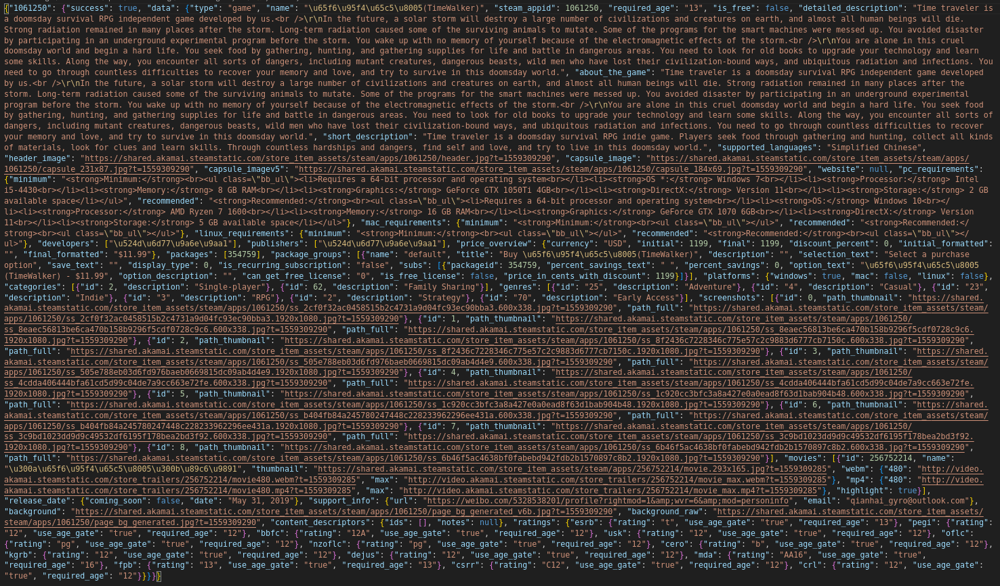
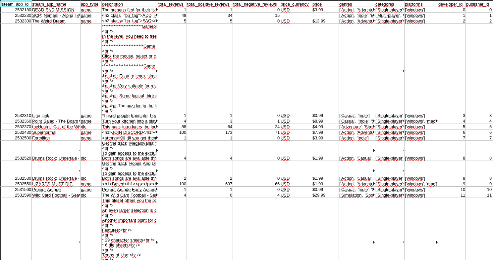
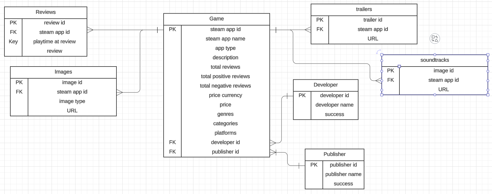
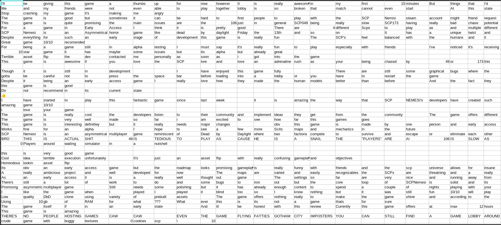
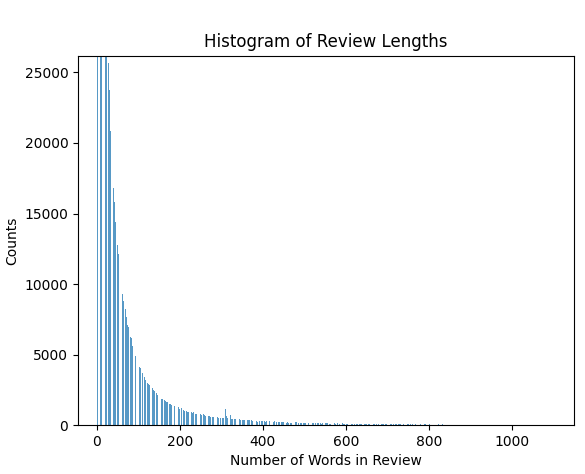
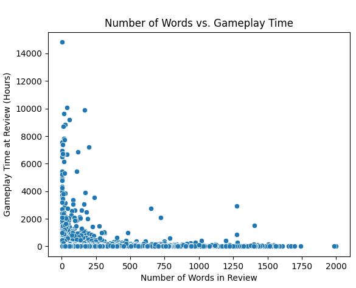

Data Collection and Exploration
Data Collection
The data utilized in this work comes directly from Steam via an API. There are three main API calls utilized to collect the data:https://api.steampowered.com/ISteamApps/GetAppList/v2/. This is used to acquire all Steam app IDs.https://store.steampowered.com/api/appdetails?appids={{"<"}}APPID{{">"}}, where APPID is the steam application ID number. This is used to to collect details about a single Steam application.https://store.steampowered.com/appreviews/{{"<"}}APPID{{">"}}?json=1&num_per_page=100&cursor={{"<"}}CUR{{">"}}&filter=recent&purchase_type=all, where CUR is a string representing the next page of reviews if there are multiple pages.
Data from these API requests is returned in the form of JSON. An example response is below:

Data Info file
Part of the data cleaning process was neatly organizing the data into CSV files according to a schema. Below is an image of data with app details organized in a CSV file and an image of the schema used for organizing the data. Data Schema
Amount of Data
At the time of writing, the current data types and amounts are as follows:
- Total apps (with details): 23,780
- App reviews (text): 4,189,520
- App images (as a url): 266,688
- App publishers: 12,866
- App developers: 14,687
- App trailers (as a url): 25,584
Data Cleaning
Formatting the data into csv files in this manner effectively cleans every column except for the description column. In that column, HTML tags are present as well as other non-text characters. The HTML tags are filtered out, and the description for any game that does not provide a coherent description is set to an empty string. Removing entire row is avoided because of the other useful information and since not all analyses are dependent of the description.
The descriptions and reviews are transformed into transaction format for later analysis as another stage of cleaning. Below is an image of review data in transaction format. 
Data visualizations
The visualizations below show initial insight into the data. Below each is a caption describing them.

The x axis is the top 10 most negatively review game developers and y axis is the total positive and negative reviews. We can see that rare ltd and DICE are the two most negatively reviewed game developers and that most developers have almost nearly equal positive reviews as well.

This graph displays the top 10 most negatively reviewed game publishers and the number of positive (green) reviews and negative (red) reviews they get. We can observe that electronic arts has the most negative reviews as well, and that most of these publishers have comparable number of positive reviews to the negative reviews. Implying that people tend to have mixed opinions on game publisher games.

The bubble plot shows the price vs review sentiment (which is the ratio of positive and negative reviews). The bubble size denotes the value of review sentiment (larger bubble implies positive review). While the colour denotes the price, more red implies more pricey game. We can observe that more pricey games tend to have more positive review sentiment, and vice versa. Which can be confirmed as less pricey games tend to be made by cheaper indie game developers who cannot make the best of games.

The pie chart shows the app types like game, demo, dlc, etc vs the total number of games. We can observe that the game app type is most common followed by dlc and music.

The graph plots total number of reviews for each price range of each game. Red are net negatively reviewed games and green and net positively reviewed games. We have removed outliers to make the graph more digestible. We can see that most games are positively reviewed, only a few are negatively reviewed. This mean the data is more skewed towards positive reviews. We can also observe that the data is more concentrated towards the left end, meaning games tend to be less pricey. But on the y axis the total reviews are quite equally spread apart, meaning there is no visible trend with games and number of reviews.

X axis is the top 10 game developers based on positive user reviews. Y axis is the total reviews received by each developer. We can see that capcom co has the highest reviews and is followed by dice , but there is a huge difference between the two. We can see that BioWare is the most positively reviewed developer.

X axis has the names of the top 10 publisher names, which were found using the most positive reviews. Y axis has the total number of reviews. This graph shows the top 10 publisher names, and that electronic arts has the highest number of reviews, and arc system works has the highest number of positive reviews.

X axis has the names of the top 5 game genres, which were found using the most positive reviews. Y axis has the total number of reviews. This graph shows the top 5 genre names, and that action is the most liked game genre and these have very little negative reviews.

The x axis shows the number of words in a review and the y axis shows how many reviews had that many words. Perhaps unsurprisingly, words with fewer words are more common while reviews with more words are less common.

This plot shows the number of words in a review plottted against how long someone had played the game before leaviing a review. Intuitively, one may believe that longer, more indepth reviews would come from people who have played the game longer. However this is not the case. Longer reviews typically come from people with a shorter amount of playtime. This could present interesting ideas for analysis later on.